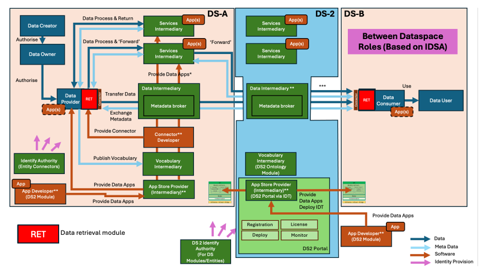
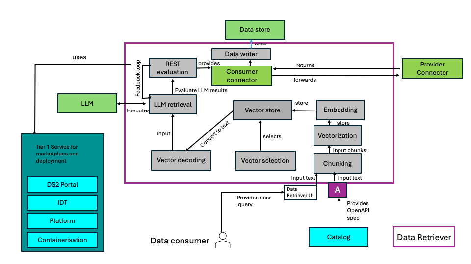
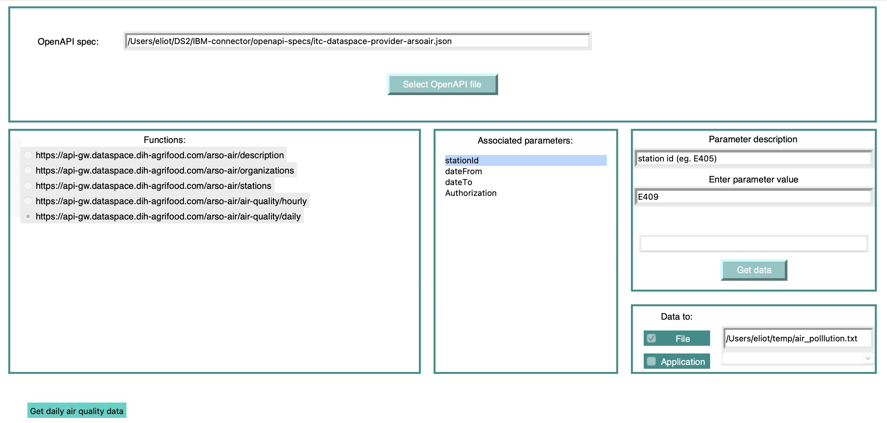
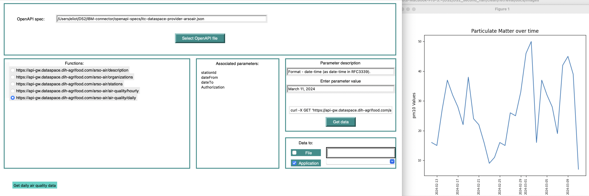

DS2 Data discovery and transformation module (RET)
| Project Links |
|---|
| Software GitHub Repository https://github.com/ds2-eu/cur.git |
| Progress GitHub Project https://github.com/orgs/ds2-eu/projects/3 |
General Description
The RET module uses machine learning technology to help a data consumer obtain access to a data store. The obtain data can either be saved to a file, or pipelined to an application with transformations between the source and target schemas automatically executed.
Description
Data offered by a data provider may be either a fix set of data, or, more typically for large sets of data, a slice extracted from a larger set of data, selectable through parameters such as a time window, or the ID of a specific entity. While in the former case the creation of the REST call to obtain the data is straightforward, the latter case can be challenging, especially if special formatting of the request parameters – such as creating timestamp in a given RFC format – is needed. Additionally, the data in the data offering may not conform to the requirements of the data requester (format, data field names, units etc.). Both of these cases can benefit from technical features to allow a data consumer to obtain and use data, which in the worst case will prevent non-technical users from taking advantage of the data space concept.
The Data Retrieval module addresses both of these issues through the use of a machine learning Large Language Model (LLM). Using an OpenAPI spec for the Provider data (obtained through the Catalogue), the user is guided to enter whatever request parameters are required by the REST call to the provider. The LLM is supplemented with the relevant portions of the OpenAPI spec and will compose the correct REST call, automatically formatting the input parameters to conform to the requirements of the spec. The REST command can then be automatically executed from the Data Retrieval GUI.
Optionally, to supply the consumer with data in the expected format, a data schema for the target must be supplied. The OpenAI spec supplies the data schema for the source data. Additionally, the consumer will require a library of various commonly required transformations, such as changing column names. Once again, LLM RAG technology is used, supplying the LLM with the source and destination schemas, as well as a description of the functions in the transformation library. The LLM is then able to determine what transformations are required on the source data, and the Data Retrieval module then automatically adds to the data acquisition pipeline the required transformations on the data. Optionally, a target application can be specified, and the Data Retrieval module will automatically add this to its pipeline and execute the target application with the obtained and transformed data.
Function generation (i.e. the creation of the REST call) works without any errors for use case data sets that take parameters. In the GreenDeal use case, for example, the module will correctly create timestamps entered in natural language to the required RFC 3339 format. Similarly, the selection of a transformation routine from the transformation library works properly for our test.
More experimentation is required, however with a larger number of required transformations from actual user requirements.
Architecture
The figure below represents the module fit into the DS-DS environment. 
The figure below represents the actors, internal structure, primary sub-components, primary DS2 module interfaces, and primary other interfaces of the module. 
Component Definition
Screenshots
The picture below represents how RET guides the user through the parameter input process: 
The following picture shows the result of executing the RET, requesting transformations and application execution. 
Commercial Information
| Organisation (s) | License Nature | License |
|---|---|---|
| IBM | Consortium Confidential | TBD |
Top Features
- GUI to guide through the input of command line parameters
- LLM function calling to properly compose the REST call, including formatting of command line parameters
- Automatic execution of the REST call and either storing the returned results to a file or pipelining the results to an application.
- Automatic selection of required data transformations to bring the downloaded data to the format of a target schema.
- Automatic injection of API token into the composed REST call.
How To Install
Clone this git module.
In order to run the RET module, the correct python environment needs to be created. It is recommended that you create a virtual environment as follows:
- python -m venv [name] where "name" will be the name of the virtual environment, for example, "venv".
- Activate the virtual environment: On Mac or Linux this will be:
source <name>/bin/activate, where the value of "name" is from the previous step. - Install inside the virtual environment the required modules:
pip install requirements.txtx
Running the module
Run the RET module as: python data_discovery_main.py with the command line options described in the following table:
| Option | Explanation | Required or Optional |
|---|---|---|
| --dir | The pathname to the directory for the OpenAPI files for the source data. | Required |
| --transform | The pathname to the file defining configuration for the transformation and application execution pipeline. | Optional |
| --url | The base URL for the LLM. | Required |
| --name | The model name for the LLN. It is recommended not to change the default value. | Optional |
| --id | The model id for the LLM. It is recommended not to change the default value. | Optional |
| --llmkey | The API key for the LLM. | Required |
| --token | The API token to be passed to the data source server. | Optional |
| --outdir | The starting directory in the directory selection box when export to a file is requested. | Optional |
| --appconfig | The pathname of the application configuration file | Optional |
In operation
The current version of RET requires an OpenAPI specification for the source data. OpenAPI specifications have become the industrial standard for describing RESTful APIs and provide information on the parameters supplied to the REST call as well as the expected format (schema) for the data to be returned. However, while OpenAPI specifications are designed to be human-readable, it is not always easy to understand what is required for input (e.g. the format of a timestamp).
The RET module is configurable to point to a list of OpenAPI specifications, and the user is able to select one or more specifications in the application GUI. Selecting an OpenAPI spec will display a list of all the REST endpoints (functions) contained within that specification. Selecting a function will display the text description of the function from the OpenAPI file, as well as list of all possible parameters for that function in "Associated Parameters" listbox. The user can then select a parameter and enter a parameter value. If the OpenAPI spec contains a description of the parameter, this will be displayed too.
The destination for the output for the data source is selectable in the GUI. Picking the "File" radio button in the "Data to:" box will bring up a directory selector for output file. After selecting an output directory, the user should then complete the displayed path with the name of the desired output file.
The RET module also allows data obtained from a data source to be transformed before storing to a file, based on the requirements of a target application.
When all desired parameters have been entered, the user can press the "Create request for data" button which will take all the input values and use an LLM to properly format them and construct a REST call and obtain the data. The code will check if the generated REST call succeeded or failed, and if failed, it will supply the LLM with the originally composed REST call and the error and prompt it to correct the REST call. This loop of REST generation, execution and validation will occur up to three times before an error is announced and human intervention is requested to correct the generated REST call displayed in the GUI.
The retrieved data will then either be written to a file or piplined to an application, as explained above.
Creating the configuration files
The "schemas" directory holds two files, "application_schema.json" and "mappings.json".
The "application_schema.json" file describes the user applications which can be selected from the RET GUI to become part of the data download, transform and application execution pipeline. This file emulates the format used by the OpenAPI specification to describe data sources. The name of this file is specified on the command line with "--transform" option.
The "mappings.json" file defines the mapping between a field in the source data schema and the target data schema, as well as the transformation required, where the transmation needs to be defined in the "transformations.py" file in the code directory. Note that in the future this file may be automatically generated by RET, however currently it must be manually created.